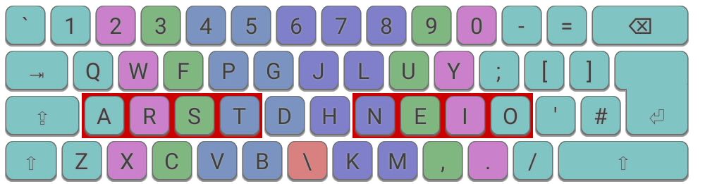
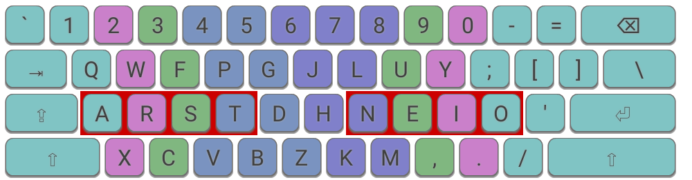
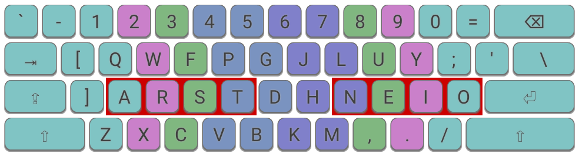
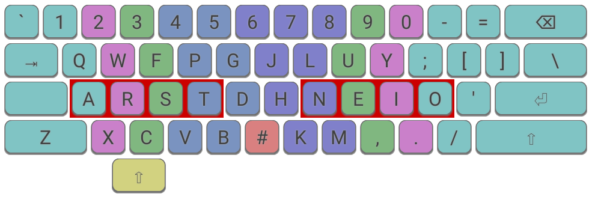

Ergonomic Keyboard Mods
The Angle Mod
The "Angle Mod" is an ergonomic mod which makes it possible to adopt a more comfortable typing posture by introducing a degree of symmetry on a standard, staggered keyboard. It was first developed in 2007 by Colemak users seeking to improve the experience of using that layout on such keyboards, but the principle can be applied to any layout.
To apply the mod, the left-hand keys on the bottom row are moved one space to the left, but you should type these keys with the conventional finger, i.e. Z=pinky, X=ring, C=middle.

The Angle Mod (shown right) is more comfortable then the traditional technique (shown left).
The Angle Mod works best on an ISO keyboard due to it having an extra key to the left of Z. On ANSI keyboards, the Angle Mod also works well, but requires an additional adjustment. Most commonly, the rare Z key is relocated to the spare key in the centre of the keyboard, but other options exist - see below for examples.
Keys are colour-coded to indcate which finger should be used.
An additional benefit of the Angle Mod is it makes the (Qwerty) B key, arguably the worst positioned key on the keyboard, much easier to reach.
An alternative to using the Angle Mod is to simply use the "wrong" fingers without changing mappings, i.e. Z=ring, X=middle, C=index. This is sometimes known as the "Angle Cheat" method! For some layouts, this may be an acceptable solution, but it should be noted that most modern layouts, including Colemak, are designed assuming the conventional finger assignment.
A version of the Angle Mod is a prerequisite for Colemak Mod-DH.
Examples
Some example layouts for different keyboard types are shown below. Home keys are highlighted with a red box. The finger that should be used is indicated by the background colour of the key.
1. ISO Keyboard:

ISO: The Angle Mod on an Qwerty ISO keyboard.

ISO: The Angle Mod on an Colemak ISO keyboard.
2. ANSI Keyboard:

ANSI "Angle(Z)": The Angle Mod on an Colemak ANSI keyboard. Due to the lack of an extra key to the right of the left shift key, we relocate the rare Z key.

ANSI "A-wing": The Angle Mod on an Colemak ANSI keyboard with alternative home position. In order to keep the correct Z position, a new column is introduced to the left-hand side.

ANSI "Fat Z": The Angle Mod on an Colemak ANSI keyboard with alternative Z placement. Because Z has displaced shift, we need a new way to access Shift, and so here we are using the Left Alt key. See modifiers for more info on this topic.